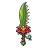

ดอกไม้กินคน
มอนธาตุดิน Lv 50–62
เจอที่
| แมพ | โซน | Lv | ในแมพ | ภูมิภาค |
|---|---|---|---|---|
| หนองพิษป่าชายเลน | ใจกลางหนองพิษ | 54–62 | ≈21 | แดนใต้สีแดง |
| บ่อโคลนพิษเดือด | บ่อโคลนเดือดใหญ่ | 50–62 | ≈13 | แดนใต้สีแดง |
| ดงต้นไม้แขวนกรง | ต้นไม้กรงใหญ่ | 50–62 | ≈13 | แดนใต้สีแดง |
| หอรากมืด (Dark Root) | ทะเลยางดำ | 81–90 |
≈ จำนวนที่อยู่ในแมพพร้อมกันโดยเฉลี่ย คิดจากไฟล์เกม (จุดเกิดของแมพ × 4 แบ่งตามสัดส่วนของแต่ละตัว) ตายแล้วเกิดใหม่ที่เดิมใน 22 วินาที · ตอนเล่นออนไลน์เซิร์ฟเวอร์เป็นคนเกิดมอน อาจไม่ตรง
ค่าสถานะตามเลเวล
| Lv | HP | ATK | DEF | MDEF | EXP | Job |
|---|---|---|---|---|---|---|
| 50 | 17,952 | 111–167 | 20 | 9 | 74 | 56 |
| 56 | 24,156 | 124–186 | 22 | 10 | 82 | 62 |
| 62 | 31,624 | 138–207 | 25 | 11 | 90 | 68 |
ตีด้วยธาตุไหนดี
แรงขึ้น: ไฟ ×1.5 พิษ ×1.25
เบาลง: ลม ×0.5 ดิน ×0.25
วัตถุดิบที่ดรอป
| ของ | โอกาส | |
|---|---|---|
| เกสรดอกไม้กินคน | 55% | 1 ชิ้น (15% ได้ 2) |
อุปกรณ์ที่ดรอป (10)
| ของ | โอกาส |
|---|---|
| 0.25% | |
| 0.12% | |
| 0.12% | |
 ดาบใหญ่ดอกไม้กินคน | 0.12% |
| 0.12% | |
| 0.12% | |
| 0.12% | |
| 0.12% | |
| 0.12% | |
| 0.06% |
สกิล
หนามสะท้อน (Lv 25+) · หนามสะท้อน (Lv 60+) · ยิงไกล (Lv 60+)